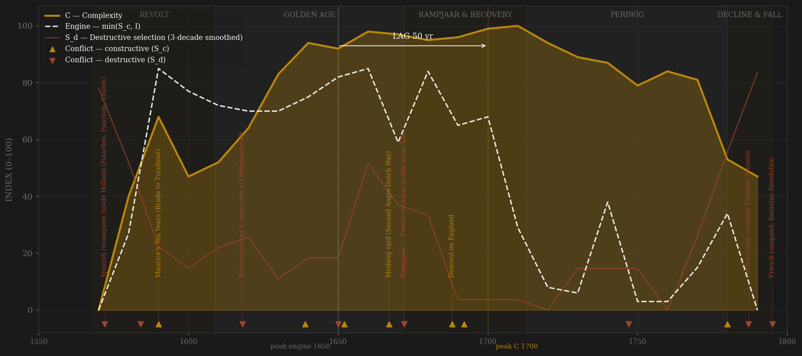
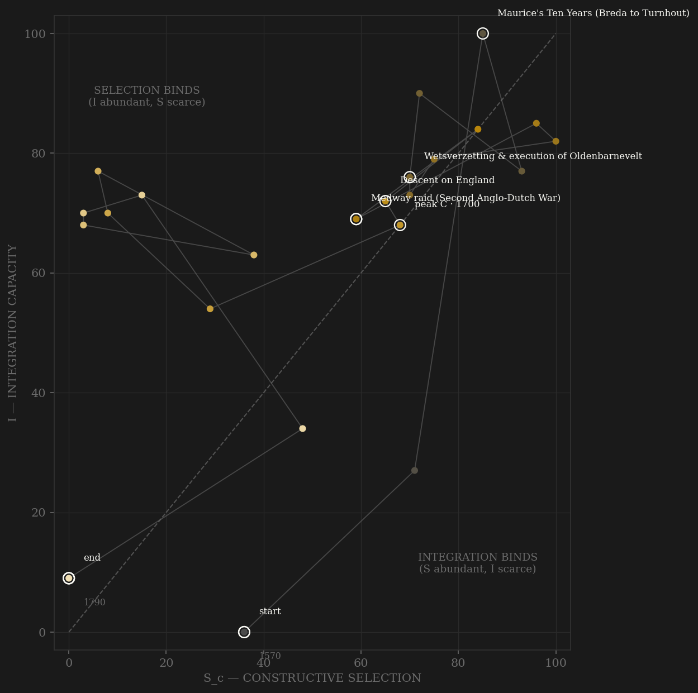

The Republic opens under the worst destructive selection in its history — Spanish armies inside Holland, Naarden massacred, Haarlem starved, Leiden saved only by cutting the dikes — and converts it, within one generation, into the sharpest contestability engine in early-modern Europe. Antwerp falls in 1585 and its merchant elite walks north: Flemish capital, Sephardi finance and, later, Huguenot craft are incorporated straight into the top of the ladder — a third of the VOC's founding Amsterdam directors were southern immigrants. The engine — min(S_c, I) — climbs through Maurice's Ten Years and the founding of the VOC and peaks in the 1650s: the First Stadtholderless Period, when the constitution itself was the contest, De Witt's Holland managed five provinces against the Orange interest, the navy promoted a ropewalk boy to admiral, and the Baltic and Asia circuits ran at full integration. Complexity crests on a long plateau, 1660–1710 — measured GDP per head the highest on earth, the densest urban system in Europe, VOC volumes still rising — with the smoothed peak at 1700: a lag of +50 years, inside the preregistered window, and the external-war-only definition agrees at +30. Then the shape inverts. The Rampjaar's red spike (1672) is survived — integration absorbs the shock and refinances the war — but the slower poison is the gold line's silent partner: after 1700 the contracten van correspondentie turn office into scheduled property, channel A decays from 10 to 2, and the engine falls away from a complexity plateau that rentier income can maintain but no longer grow. The Doelisten (1748) and the Patriots (1780s) are both attempts to force the ladder back open; both are crushed, the second by a Prussian army. By 1795 there is no engine left to defend the plateau, and the Republic ends in a winter without a battle.

The trajectory enters at the bottom-left — the revolt decade, coordination genuinely broken, selection pressure enormous but formless — and climbs both axes faster than any polity in the sample: within three decades the path crosses into the balanced upper-right, and it stays pinned near the top-right corner for six decades, 1590–1670, the longest high-contest/high-integration residence measured so far. The excursions are informative: 1610s (truce, contest at peak via the Remonstrant crisis while B-channel rivalry sleeps), and the Rampjaar hook of the 1670s, when S_d tears at both axes and the path snaps back within a decade — the memory term visible in real time. The terminal geometry is the diagnostic. Rome starved of selection with integration halved; Ming died at the right wall at full contest. The Dutch path walks DOWN the selection axis while integration holds near 70 — half a century, 1710–1770, spent deep in the SELECTION BINDS region: coordination abundant, contest formally abolished by written cartel. At the C peak the binding constraint is already selection (Sc 29 vs I 54). Only at the very end does integration collapse too — the Fourth English War and the VOC insolvency drag I down after 1780, and the path dies at the origin like Mughal, but it arrives there along the opposite wall.
Coded by locus and target, never by outcome. The Dutch ledger is the cleanest demonstration in the sample that the same war changes code when it changes address: the Eighty Years War is S_d while Spanish tercios besiege Haarlem and Leiden inside the core (Adrianople rule), and S_c once Maurice pushes the front off-core in the 1590s — same enemy, same war, different locus. The Anglo-Dutch wars are pure peer contest, fought at sea, ending in the enemy's own river at the Medway; the 1688 descent on England is external projection with the machinery intact. The two great hinges both carry double codes. 1618–19: the Remonstrant crisis fought through pamphlet, council and National Synod is within-rules contest (channel C at its peak) — but Maurice's purge of the town councils and the beheading of Oldenbarnevelt, the Land's Advocate, is the state striking its own coordination head, S_d. 1672: the French invasion penetrates the core AND the mob at the Gevangenpoort eats the government — invasion and lynching are separate ledger rows, one address: the Republic's own machinery. The Patriot decade repeats the pattern at the death: 1781–86 is petition, press and council majority (C), and 1787 — free corps against Orange troops, then 25,000 Prussians marching on Holland — is S_d, external origin notwithstanding.
| YEAR | CONFLICT | CODE | CODING RATIONALE |
|---|---|---|---|
| 1572 | Spanish reconquest inside Holland (Naarden, Haarlem, Leiden) | Sd | Core penetrated — massacre, siege, dikes cut to save Leiden 1574; Adrianople rule despite external origin |
| 1584 | William of Orange assassinated | Sd | The revolt's coordinating head killed at Delft — internal locus, the machinery decapitated |
| 1590 | Maurice's Ten Years (Breda to Turnhout) | Sc | The front pushed off the core; the army peer states send observers to study — external contest disciplining the state |
| 1618 | Wetsverzetting & execution of Oldenbarnevelt | Sd | The Synod itself was within-rules contest (channel C); Maurice's purge of the councils and the judicial killing of the Land's Advocate struck the state's own coordination — locus rule |
| 1639 | Battle of the Downs | Sc | Tromp annihilates the last Spanish armada in neutral waters — naval peer contest at full function |
| 1650 | William II's march on Amsterdam | Sd | A stadtholder's coup against his own paymasters — six regents arrested; answered by the Great Assembly and the True Freedom |
| 1652 | First Anglo-Dutch War | Sc | The first pure naval peer war — Gabbard, Scheveningen, convoy economics; external locus throughout |
| 1667 | Medway raid (Second Anglo-Dutch War) | Sc | The war carried into the RIVAL'S core — the Royal Charles towed home; peak peer rivalry, Dutch machinery untouched |
| 1672 | Rampjaar — French invasion to the water line | Sd | Louis XIV's armies take Utrecht and Gelderland; the flooded line the last membrane before Holland — core penetrated, Adrianople rule |
| 1672 | De Witt brothers lynched | Sd | The Grand Pensionary and his brother torn apart at the Gevangenpoort — the polity eating its own government; city councils overturned street by street (same address as the invasion: the Republic's own machinery — separate ledger row, one arc annotation) |
| 1688 | Descent on England | Sc | 463 ships put a peer state's throne in Dutch hands — the boldest external projection in the Republic's history; machinery intact (Hannibal rule) |
| 1692 | Barfleur–La Hogue (Nine Years' War) | Sc | The Republic funding and manning a continental coalition against Louis XIV — peak channel-B burn, fought off-core |
| 1747 | Bergen op Zoom stormed; Orangist overturn & Pachtersoproer | Sd | France breaches the barrier into Dutch Flanders; tax-farmers' houses sacked across Holland; councils purged again — mixed locus, destructive edge |
| 1780 | Fourth Anglo-Dutch War | Sc | External naval war (Dogger Bank a bloody draw); the catastrophic OUTCOME — trade annihilated, VOC insolvent — is coded in E and I, not S_d: locus, never outcome |
| 1787 | Patriot rising crushed; Prussian invasion | Sd | Free corps vs Orange troops, Wilhelmina stopped at Goejanverwellesluis, then 25,000 Prussians march on Holland — core penetrated, Patriot governments purged |
| 1795 | French conquest; Batavian Revolution | Sd | Terminal — the army crosses the frozen rivers, the stadtholder flees from Scheveningen beach, the old Republic dissolved |
| COMPONENT | GRADE | BASIS |
|---|---|---|
| S_c A — Elite-entry (0.40) | ◐ proxy + coded | Half measured-proxy: religious-tolerance index + immigrant inflow per decade (Flemish/Sephardi/Huguenot merchant incorporation, dutch_immigration_tolerance.csv — round-number compilation after Lucassen, graded proxy, not measured). Half coded: VOC chamber directorship / admiralty / town-council openness ordinal — the contracten van correspondentie formalizing office rotation among closed families after 1700 = the channel-A decay signal (Israel; De Jong, Met goed fatsoen) |
| S_c B — External rivalry (0.30 cap) | ○ scholar-coded | War-years ordinal, locus-cleaned: Eighty Years War off-core campaigns, four Anglo-Dutch wars, 1688 descent, coalition wars vs Louis XIV. Core-penetration episodes (1572–76, 1672, 1747, 1787, 1794–95) excised to S_d. This channel alone = the frozen Sc_v1_combat column |
| S_c C — Internal within-rules (0.30) | ○ scholar-coded | States-General vs Stadtholder alternation; Remonstrant crisis fought via synod 1618–19; the two Stadtholderless Periods as institutionalized contest (Act of Seclusion 1654, Perpetual Edict 1667, Plooierijen 1702–08); Doelisten 1748; Patriot within-rules phase 1781–86 |
| S_d — Destructive | ○ scholar-coded | Locus-and-target ledger: 1572–76 core sieges, 1584 assassination, 1618–19 purge + execution, 1650 coup, 1672 invasion + lynching, 1747–48, 1787, 1794–95. Per-decade rationale in data/raw/dutch/coding_ledger_v2.csv |
| I — Integration | ● measured (0.60) + ○ coded (0.40) | Sound Toll Registers annual passage counts 0.30 (MEASURED — the project's established Dutch integration proxy; all-flags totals, Dutch share ~60–70% early falling to ~30% by the 18th c., so the late recovery overstates Dutch integration — flagged); VOC outward ships/yr 0.30 (compiled after Dutch-Asiatic Shipping; true zero pre-1595); institutional integration ordinal 0.40 (wisselbank, beurs, convoy system, trekvaart, funded debt) |
| C — Complexity | ◐ measured + proxy | Equal-weight mean: Maddison GDPpc (annual van Zanden/van Leeuwen reconstruction, decade means — the highest per-capita economy on earth c. 1600–1750), urbanization % (compiled anchors, interpolated — the most urbanized polity in early-modern Europe), VOC trade value (compiled; NaN pre-1602, C renormalizes over the two remaining components) |
| E — Entropy / R — Population | ○ coded + measured anchors | E ordinal with cited anchors: tulip mania 1637, plagues, Rampjaar panic, paalworm 1731–32, credit crashes 1763/1772–73, Fourth English War collapse + VOC dividend 0 from 1782 (measured) + wisselbank ruin. R = Republic population in raw millions, interpolated compiled anchors |
23 decade rows (1570–1790) built from local tier-1 data by scripts/build_dutch_sicre.py (2026-07-06), STRAIGHT to S_c definition v2 (contestability composite, 0.40 elite-entry / 0.30 external hard cap / 0.30 internal within-rules; AMENDMENT_S_definition_v2.md); per-decade channel scores and rationales in data/raw/dutch/coding_ledger_v2.csv, component audit in components_audit.csv, source grading in SOURCES.md. BOTH DEFINITIONS REPORTED per the amendment: v2 contestability lag +50 (engine 1650 — the De Witt decade — → C 1700, PASS); v1 external-war-only lag +30 (engine 1670 → C 1700, PASS) — the definitions agree; no verdict flip. Frozen protocol throughout: 3-decade centered rolling mean, engine = min(S_c, I). Robustness stated, not hidden: smoothed C is a 1660–1710 plateau with spread <3 points — the peak lands at 1700 because compiled VOC trade volume keeps rising into the 1730s (the de Vries volume-vs-profit paradox); reading the plateau's early edge (1660) would give +10 SIMULTANEOUS under v2. Sound Toll passage counts are all-flags totals (Dutch share declines after ~1720 — flagged in I_notes). COW NMC/trade and OWID democracy files begin 1816/1870/1789 — post-Republic, checked and excluded. Rebuild: build_dutch_sicre.py, then polity_report.py --slug dutch.